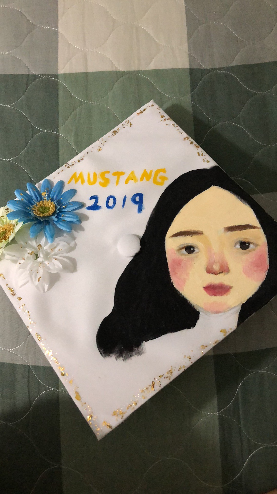
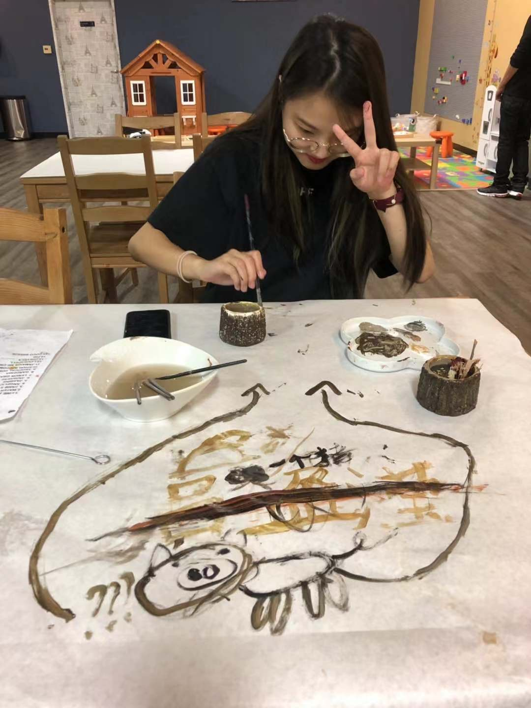
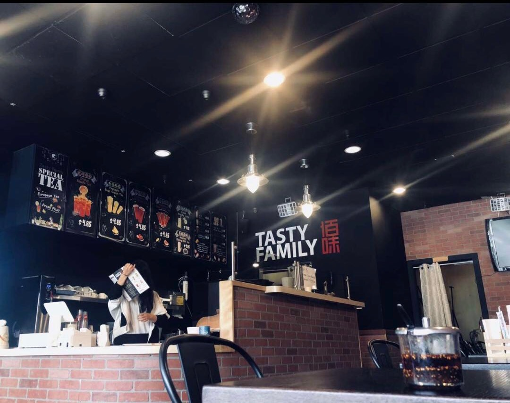
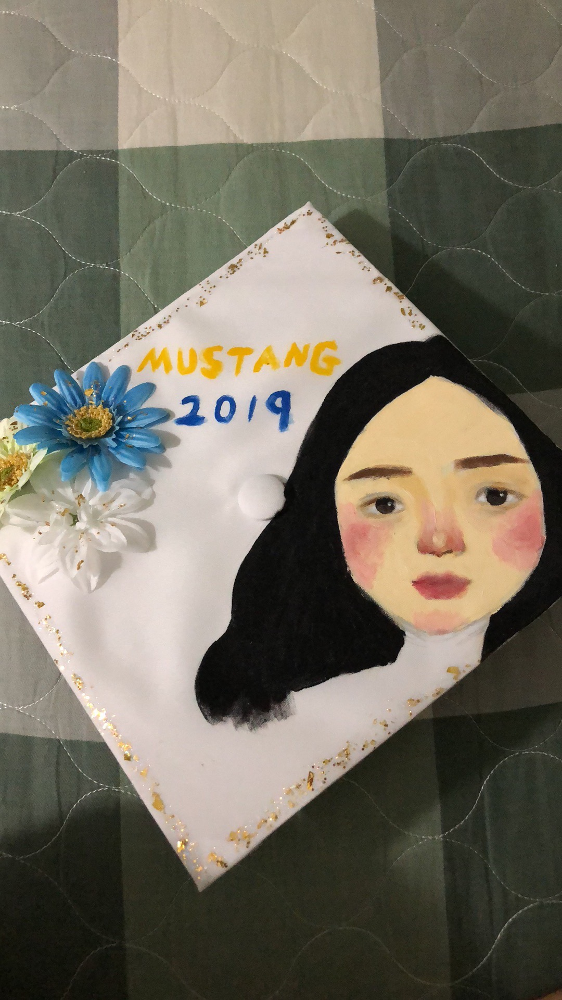
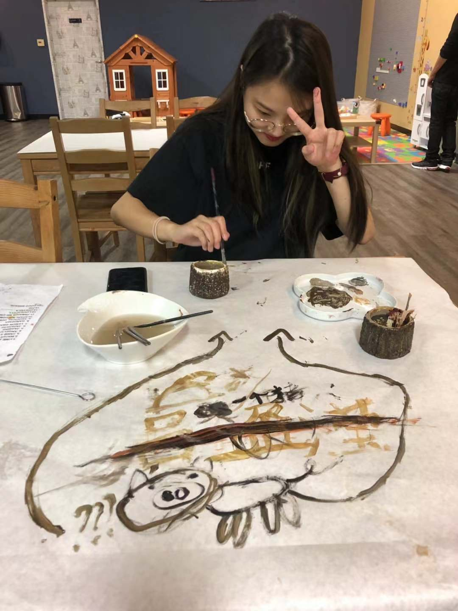
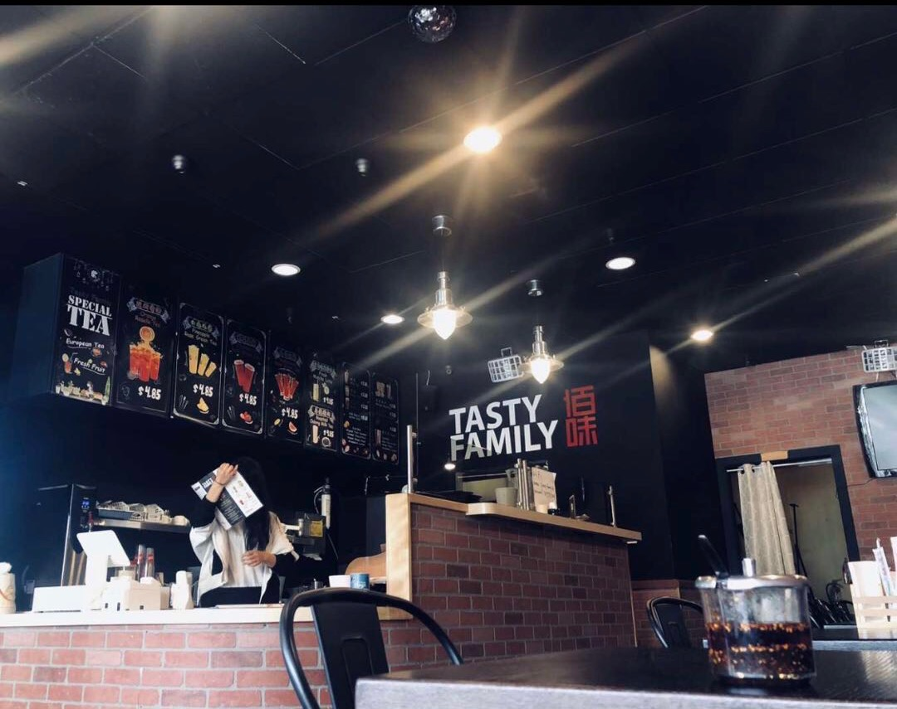

YingYing Lu
I had a special relationship with art. I discovered my passion in art at a very young age. I knew I was different, most of my childhood friends wanted to become firefighters, pilots or teachers, but I wanted to become an artist. I was determined to get involved in art.
Growing up, I loved expressing my feelings through colorful things, I always approach things in a different way than others.
I sketched my first portrait when I was three years old. I used to make my own costumes, then I’ll have a little fashion show for my parents. One time I got to know bjd- boll jointed doll , I was attracted by the beautiful faces and the flexibility of their bodies, so I decided to make my own doll family. I started from reading books about it, learning step by step, after a long time of exploring, I was able to make a complete doll that has detailed face expression. Then I took it one step further on my own, I connected the joints with rubber bands, so that they can move freely, I made them more alive than before. I was curious about art, I wanted to explore more about it, unfortunately I didn’t get a lot of professional guidance, I did most of the exploring on my own. But my passion in art did not fade away. I always carry a notepad wherever I go, so I can draw things down as soon as I get inspiration, when I get home, I’ll expand those inspirations to make my own paintings.
I was once confused about my life. I went a hospital just like the famous artist Davy Liu did. During the time, I had to live without a phone or a computer, it was hard at first because I didn’t know what to do. but then I realized that it was so peaceful and quiet, it was the perfect environment for me to express my feelings. My thoughts flew away with the swinging branches out of the window and went back to my elementary school times when everyone told me that I should be an artist and how amazing are my talents. I got off with my depression and was so happy of life, I understood that I have more important things to do than just stay where I am. I want to contribute to social development by my art. The week went by really fast, I created a little character called “Yaya”, in those drawings, I pictured how Yayas live their life. Yaya is just like everyone, Yaya would laugh, cry, be angry, but he/she will always stand up and never give up on failures. When I was leaving, I decided not to take my artworks home with me, instead I gifted them to the kids in the hospital, some of them were still struggling, I hope that my artwork can inspire them, and guide them through life. I think this is the beauty of art, art does not stay in one place, it inspires more and more people, then they pass it down to more people, the influences is endless.
Experience
Education
UC Riverside
Portfolio

My paint on my gruaduation hat

New style of Painting a picture

Making and painting my candle

my first job at a restaurant (I was looking at the menu)

My paint on my gruaduation hat
New style of Painting a picture

Making and painting my candle

my first job at a restaurant (I was looking at the menu)